Create a box plot with points. Box plots display a group of numerical data through their quartiles.
ggboxplot(
data,
x,
y,
combine = FALSE,
merge = FALSE,
color = "black",
fill = "white",
palette = NULL,
title = NULL,
xlab = NULL,
ylab = NULL,
bxp.errorbar = FALSE,
bxp.errorbar.width = 0.4,
facet.by = NULL,
panel.labs = NULL,
short.panel.labs = TRUE,
linetype = "solid",
size = NULL,
width = 0.7,
notch = FALSE,
outlier.shape = 19,
select = NULL,
remove = NULL,
order = NULL,
add = "none",
add.params = list(),
error.plot = "pointrange",
label = NULL,
font.label = list(size = 11, color = "black"),
label.select = NULL,
repel = FALSE,
label.rectangle = FALSE,
ggtheme = theme_pubr(),
...
)Arguments
- data
a data frame
- x
character string containing the name of x variable.
- y
character vector containing one or more variables to plot
- combine
logical value. Default is FALSE. Used only when y is a vector containing multiple variables to plot. If TRUE, create a multi-panel plot by combining the plot of y variables.
- merge
logical or character value. Default is FALSE. Used only when y is a vector containing multiple variables to plot. If TRUE, merge multiple y variables in the same plotting area. Allowed values include also "asis" (TRUE) and "flip". If merge = "flip", then y variables are used as x tick labels and the x variable is used as grouping variable.
- color
outline color.
- fill
fill color.
- palette
the color palette to be used for coloring or filling by groups. Allowed values include "grey" for grey color palettes; brewer palettes e.g. "RdBu", "Blues", ...; or custom color palette e.g. c("blue", "red"); and scientific journal palettes from ggsci R package, e.g.: "npg", "aaas", "lancet", "jco", "ucscgb", "uchicago", "simpsons" and "rickandmorty".
- title
plot main title.
- xlab
character vector specifying x axis labels. Use xlab = FALSE to hide xlab.
- ylab
character vector specifying y axis labels. Use ylab = FALSE to hide ylab.
- bxp.errorbar
logical value. If TRUE, shows error bars of box plots.
- bxp.errorbar.width
numeric value specifying the width of box plot error bars. Default is 0.4.
- facet.by
character vector, of length 1 or 2, specifying grouping variables for faceting the plot into multiple panels. Should be in the data.
- panel.labs
a list of one or two character vectors to modify facet panel labels. For example, panel.labs = list(sex = c("Male", "Female")) specifies the labels for the "sex" variable. For two grouping variables, you can use for example panel.labs = list(sex = c("Male", "Female"), rx = c("Obs", "Lev", "Lev2") ).
- short.panel.labs
logical value. Default is TRUE. If TRUE, create short labels for panels by omitting variable names; in other words panels will be labelled only by variable grouping levels.
- linetype
line types.
- size
Numeric value (e.g.: size = 1). change the size of points and outlines.
- width
numeric value between 0 and 1 specifying box width.
- notch
If
FALSE(default) make a standard box plot. IfTRUE, make a notched box plot. Notches are used to compare groups; if the notches of two boxes do not overlap, this suggests that the medians are significantly different.- outlier.shape
point shape of outlier. Default is 19. To hide outlier, specify
outlier.shape = NA. When jitter is added, then outliers will be automatically hidden.- select
character vector specifying which items to display.
- remove
character vector specifying which items to remove from the plot.
- order
character vector specifying the order of items.
- add
character vector for adding another plot element (e.g.: dot plot or error bars). Allowed values are one or the combination of: "none", "dotplot", "jitter", "boxplot", "point", "mean", "mean_se", "mean_sd", "mean_ci", "mean_range", "median", "median_iqr", "median_hilow", "median_q1q3", "median_mad", "median_range"; see ?desc_statby for more details.
- add.params
parameters (color, shape, size, fill, linetype) for the argument 'add'; e.g.: add.params = list(color = "red").
- error.plot
plot type used to visualize error. Allowed values are one of c("pointrange", "linerange", "crossbar", "errorbar", "upper_errorbar", "lower_errorbar", "upper_pointrange", "lower_pointrange", "upper_linerange", "lower_linerange"). Default value is "pointrange" or "errorbar". Used only when add != "none" and add contains one "mean_*" or "med_*" where "*" = sd, se, ....
- label
the name of the column containing point labels. Can be also a character vector with length = nrow(data).
- font.label
a list which can contain the combination of the following elements: the size (e.g.: 14), the style (e.g.: "plain", "bold", "italic", "bold.italic") and the color (e.g.: "red") of labels. For example font.label = list(size = 14, face = "bold", color ="red"). To specify only the size and the style, use font.label = list(size = 14, face = "plain").
- label.select
can be of two formats:
a character vector specifying some labels to show.
a list containing one or the combination of the following components:
top.upandtop.down: to display the labels of the top up/down points. For example,label.select = list(top.up = 10, top.down = 4).criteria: to filter, for example, by x and y variabes values, use this:label.select = list(criteria = "`y` > 2 & `y` < 5 & `x` %in% c('A', 'B')").
- repel
a logical value, whether to use ggrepel to avoid overplotting text labels or not.
- label.rectangle
logical value. If TRUE, add rectangle underneath the text, making it easier to read.
- ggtheme
function, ggplot2 theme name. Default value is theme_pubr(). Allowed values include ggplot2 official themes: theme_gray(), theme_bw(), theme_minimal(), theme_classic(), theme_void(), ....
- ...
other arguments to be passed to
geom_boxplot,ggparandfacet.
Details
The plot can be easily customized using the function ggpar(). Read ?ggpar for changing:
main title and axis labels: main, xlab, ylab
axis limits: xlim, ylim (e.g.: ylim = c(0, 30))
axis scales: xscale, yscale (e.g.: yscale = "log2")
color palettes: palette = "Dark2" or palette = c("gray", "blue", "red")
legend title, labels and position: legend = "right"
plot orientation : orientation = c("vertical", "horizontal", "reverse")
Suggestions for the argument "add"
Suggested values are one of c("dotplot", "jitter").
See also
ggpar, ggviolin, ggdotplot
and ggstripchart.
Examples
# Load data
data("ToothGrowth")
df <- ToothGrowth
# Basic plot
# +++++++++++++++++++++++++++
# width: change box plots width
ggboxplot(df, x = "dose", y = "len", width = 0.8)
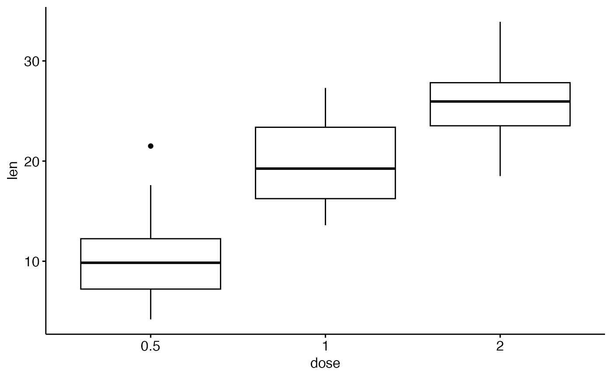
# Change orientation: horizontal
ggboxplot(df, "dose", "len", orientation = "horizontal")
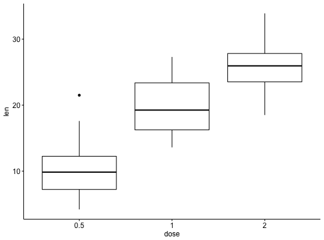
# Notched box plot
ggboxplot(df, x = "dose", y = "len",
notch = TRUE)
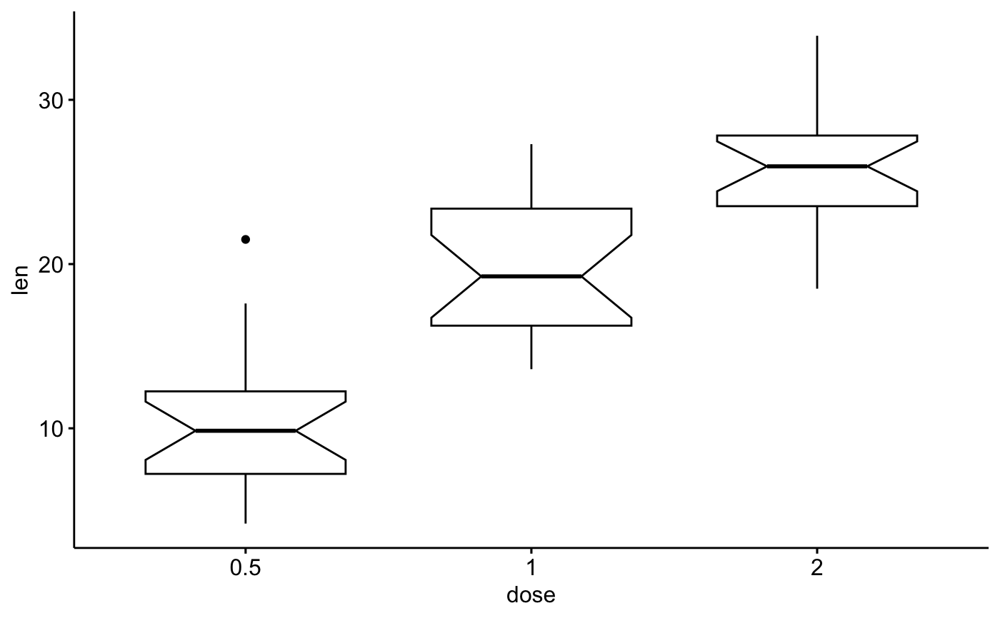
# Add dots
# ++++++++++++++++++++++++++
ggboxplot(df, x = "dose", y = "len",
add = "dotplot")
#> Bin width defaults to 1/30 of the range of the data. Pick better value with
#> `binwidth`.
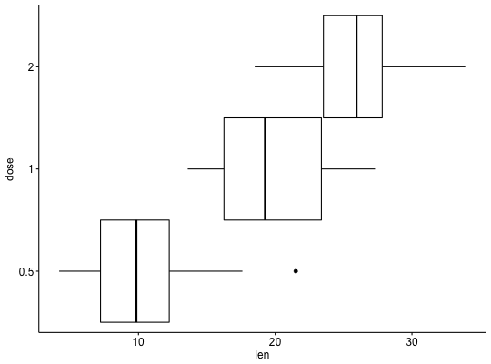
# Add jitter points and change the shape by groups
ggboxplot(df, x = "dose", y = "len",
add = "jitter", shape = "dose")
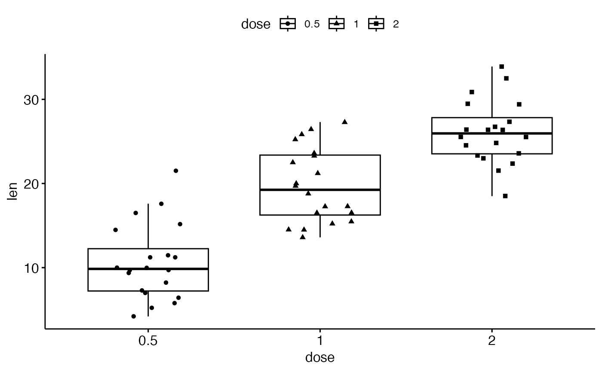
# Select and order items
# ++++++++++++++++++++++++++++++
# Select which items to display: "0.5" and "2"
ggboxplot(df, "dose", "len",
select = c("0.5", "2"))
 # Change the default order of items
ggboxplot(df, "dose", "len",
order = c("2", "1", "0.5"))
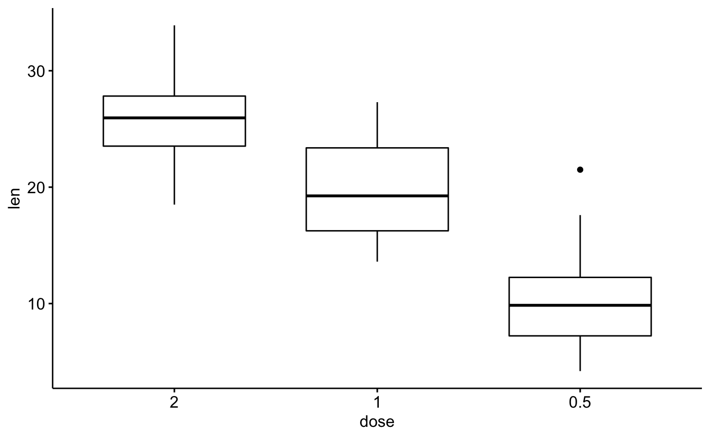
# Change colors
# +++++++++++++++++++++++++++
# Change outline and fill colors
ggboxplot(df, "dose", "len",
color = "black", fill = "gray")
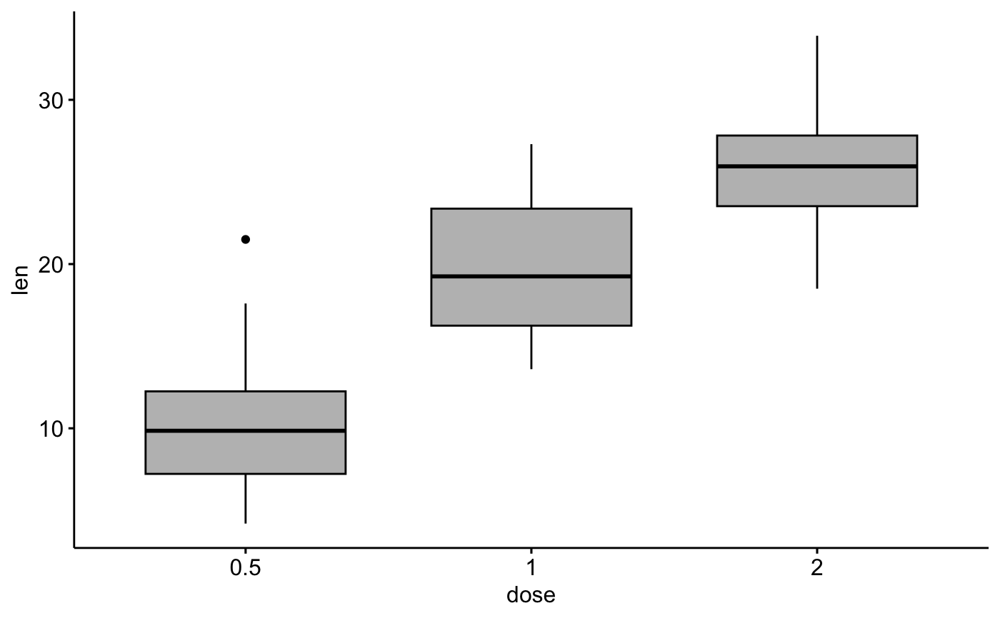
# Change outline colors by groups: dose
# Use custom color palette
# Add jitter points and change the shape by groups
ggboxplot(df, "dose", "len",
color = "dose", palette =c("#00AFBB", "#E7B800", "#FC4E07"),
add = "jitter", shape = "dose")
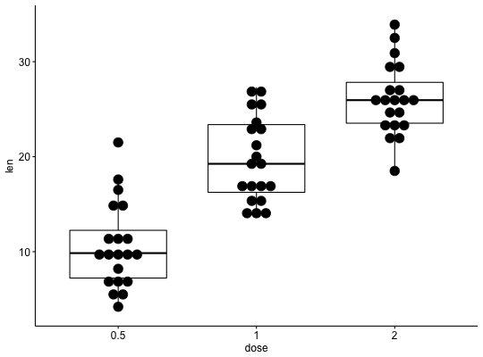
# Change fill color by groups: dose
ggboxplot(df, "dose", "len",
fill = "dose", palette = c("#00AFBB", "#E7B800", "#FC4E07"))
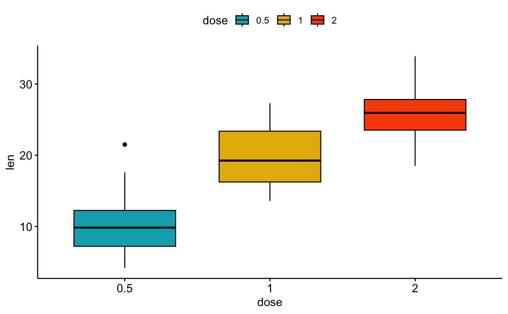
# Box plot with multiple groups
# +++++++++++++++++++++
# fill or color box plot by a second group : "supp"
ggboxplot(df, "dose", "len", color = "supp",
palette = c("#00AFBB", "#E7B800"))
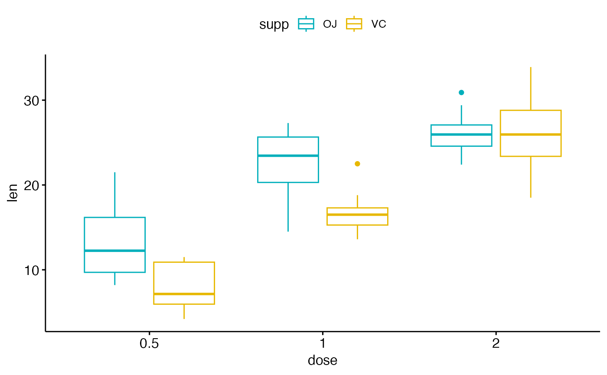
# Change the default order of items
ggboxplot(df, "dose", "len",
order = c("2", "1", "0.5"))
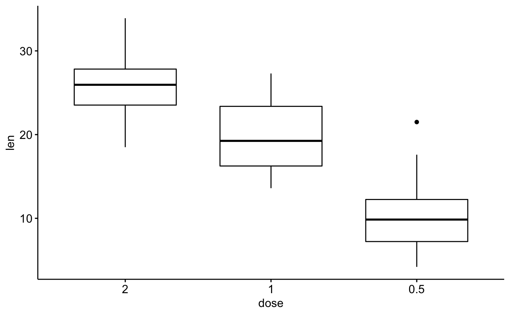
# Change colors
# +++++++++++++++++++++++++++
# Change outline and fill colors
ggboxplot(df, "dose", "len",
color = "black", fill = "gray")
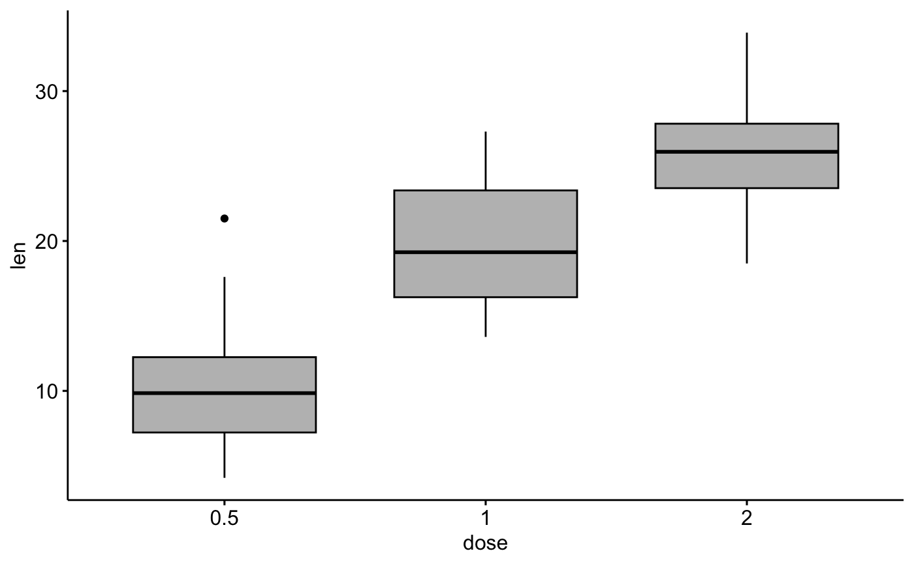
# Change outline colors by groups: dose
# Use custom color palette
# Add jitter points and change the shape by groups
ggboxplot(df, "dose", "len",
color = "dose", palette =c("#00AFBB", "#E7B800", "#FC4E07"),
add = "jitter", shape = "dose")
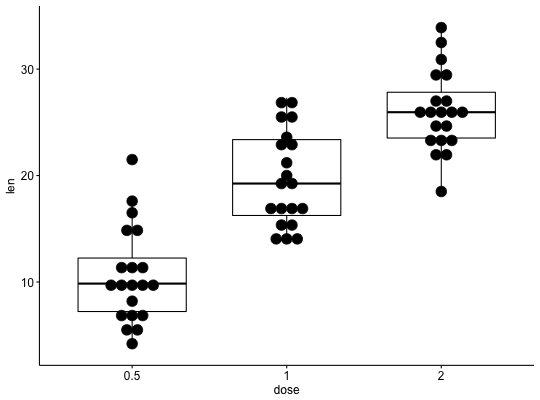
# Change fill color by groups: dose
ggboxplot(df, "dose", "len",
fill = "dose", palette = c("#00AFBB", "#E7B800", "#FC4E07"))
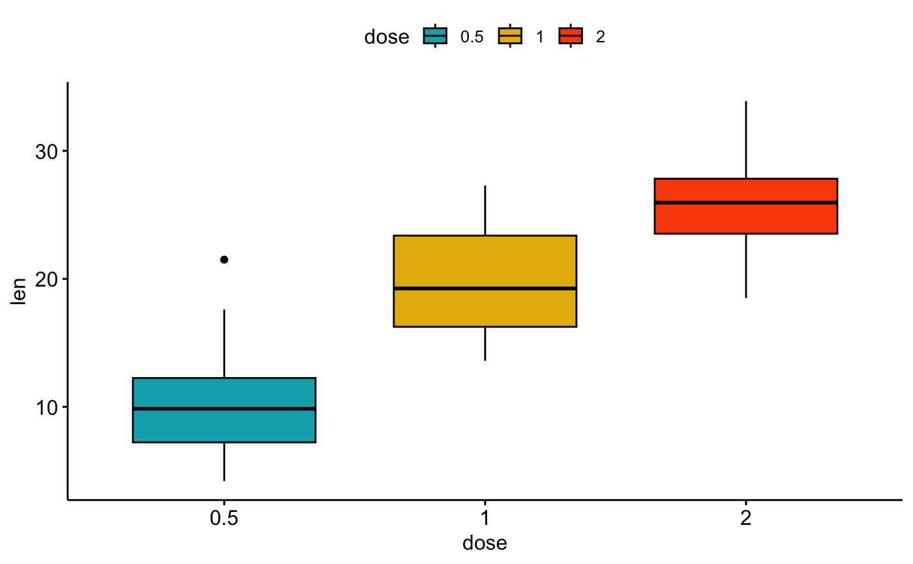
# Box plot with multiple groups
# +++++++++++++++++++++
# fill or color box plot by a second group : "supp"
ggboxplot(df, "dose", "len", color = "supp",
palette = c("#00AFBB", "#E7B800"))
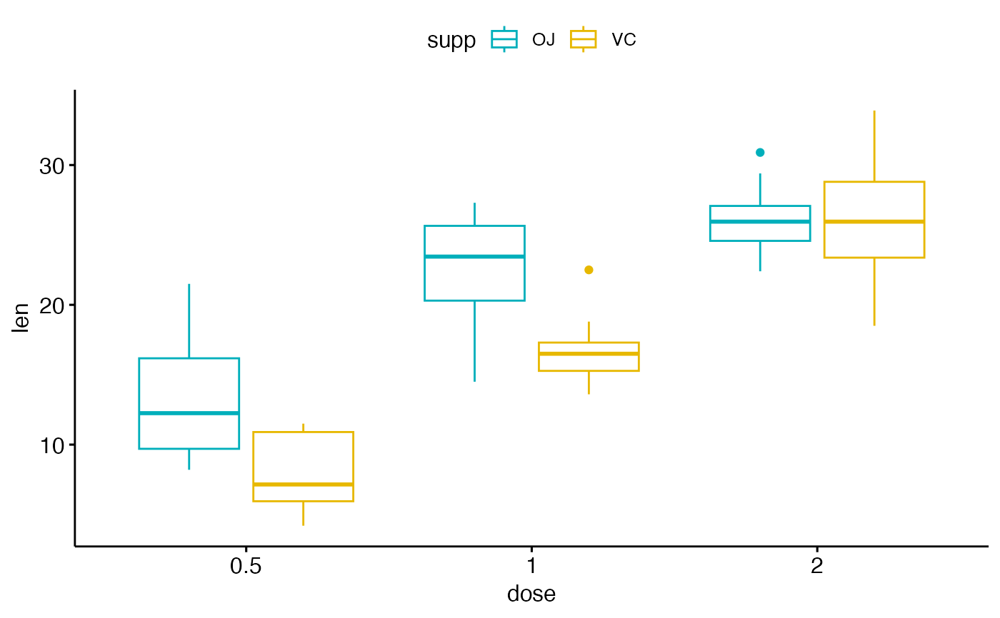